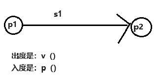
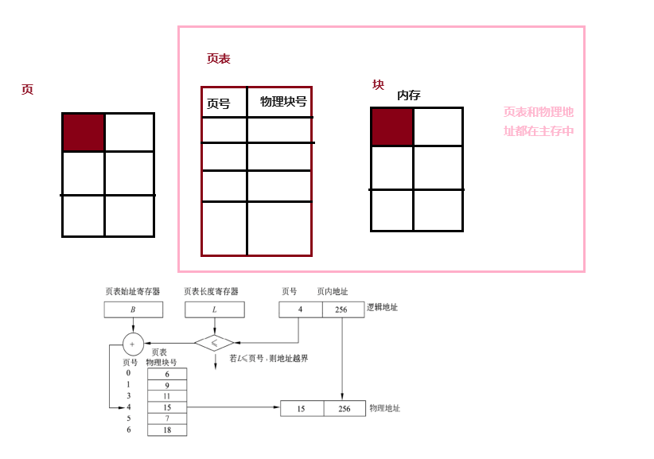
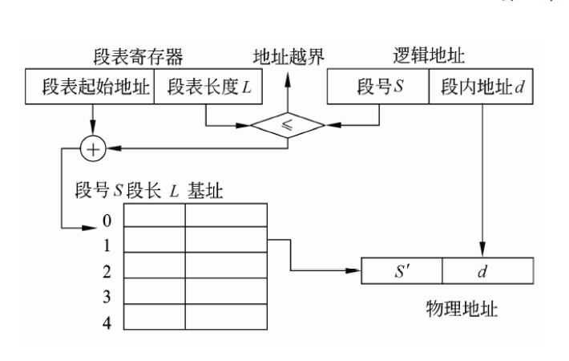
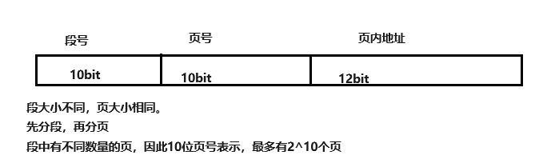
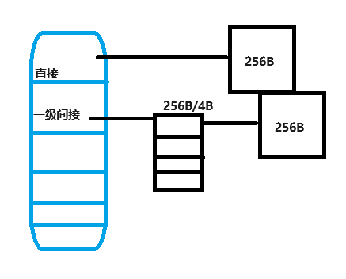
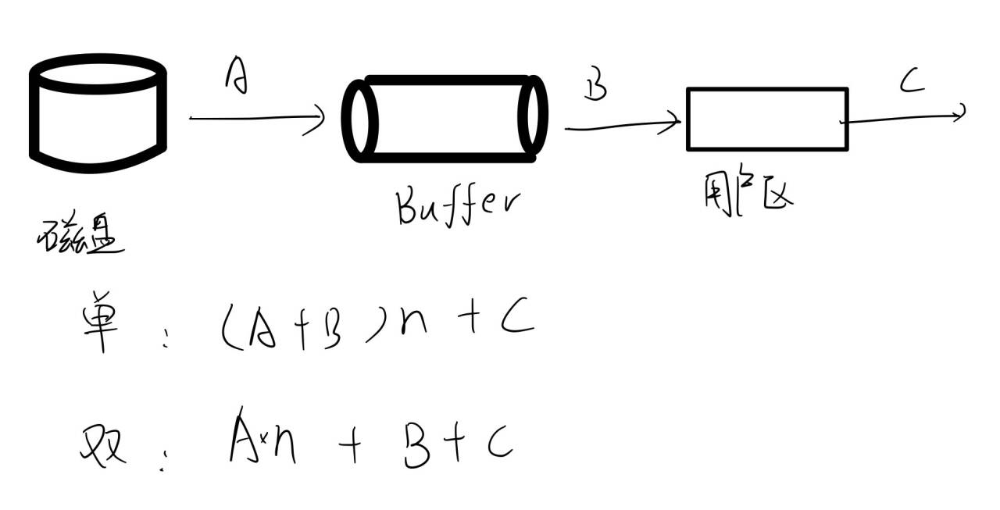

操作系统
cpu 管理
进程
-
前驱图
-
进程状态转换
-
进程通信
- 同步与互斥
- 信号量
- PV 操作是低级通信原语 
- 互斥信号量和资源信号量<0 时绝对值表示等待进程数
- 高级通信
- 共享存储
- 消息
- 管道
-
进程调度 作业调度-高级调度
外存进内存-中级调度
低级调度-进程调度
- FCFS
- 时间片
- 优先级调度
- 多级反馈队列
-
死锁：两个以上的进程互相要求对方占有的资源
- 条件
- 互斥
- 环路等待
- 不可剥夺
- 请求保持
- 死锁的处理
- 预防
- 有序（破坏循环等待）、静态（不可剥夺）
- 避免
- 银行家算法
- 检测
- 死锁定理
- 解除
- 资源剥夺、撤销进程
- 预防
- 条件
线程
- 用户级
- 内核级：依赖于内核、系统调用
管程:共享数据和并发进程组成的
协程：用户态的轻量级线程
内存管理
 寄存器
寄存器
缓存
主存
-
分区——作业
- 固定分区
- 可变分区：按照作业大小（有碎片）
- 可重定位分区：可移动制连续（无碎片）
- 调度算法
- 最佳适应：最合适
- 最差适应：最大
- 首次适应：第一次
- 循环适应
-
分页——大小相等
-
地址重定位
-

-
-
分段——大小不固定 
-
段页式——将程序段分页
- 先找段表，再找页表
- 
-
虚拟存储——增加请求调入和置换功能
- 缺页中断：几个页面装入内存则产生几次却页中断。中断经过处理后，应让其执行中断的那一条命令
- 页面置换算法
- FIFO
- LRU：
- 最佳置换：未来最长时间不访问（理想）
- 最近未使用
- 页面置换算法
- 抖动“颠簸”：频繁请求页面
- 缺页中断：几个页面装入内存则产生几次却页中断。中断经过处理后，应让其执行中断的那一条命令
作业管理
- 作业状态
- 作业调度
- FCFS
- 短作业优先
- 高响应比
- 响应比：
- 优先级
- 均衡调度
文件管理
-
概念
- 文件系统：管理、存取、机构
- 文件：具有文件名的信息集合
-
文件逻辑结构
- 有结构
- 定长 char(50)
- 变长 varvhar
- 无结构
- 字节流（unix）
- 有结构
-
文件物理结构
- 连续
- 链式
- 索引
- 多级索引 
-
文件目录
- 文件控制块
- 全文件名：绝对路径
- 目录结构
- 单级
- 二级
- 多级：解决命名冲突 需要确定是 win 还是 linux，linux 是/为根目录，win 需要盘符 相对路径: 1.引用上级文件： ../cover1.jpg 2.引用同级文件： cover1.jpg 3.引用下级文件： cover/cover1.jpg(不用/开头) 4.引用上上级文件： ../../cover1.jpg
- 文件控制块
-
文件存储空间管理（外存）
- 空闲区表（区间）
- 位示图（矩阵）:
- 计算：（*8 是因为把 b（位）转换成 B（字节））
- 先计算物理空间内有多少个块（注意单位）
- 一个块用 1bit 表示，转化为字或者 B
- 计算：（*8 是因为把 b（位）转换成 B（字节））
- 空闲块链（单链表）
- 组成连接（邻接表）
-
文件共享
- 硬链接：建立新索引
- 软连接（符号连接）：复制地址
-
文件级安全
- 权限
- 隐藏
设备管理
- I/O 软件
- 中断处理-设备驱动-设备无关软件-用户进程
- 技术
- 通道
- DMA（直接主存存取）技术
- 缓冲：缓冲区解决 I/O 慢，cpu 快的问题
- 
- Spooling（虚拟设备）——作业
- 预输入程序
- 换输出程序
- 井管理
- 作业表
- 题目
- 双缓冲区处理时间：max(c,t)
- 单缓冲区处理时间:max(c,t)+m
- 磁盘管理
- 容量：

- 读取时间=总数据块 ×（找磁道的时间＋旋转延迟时间＋传输时间）
- 磁盘调度
- FCFS
- SSTF 最短寻道时间优先
- 扫描算法
- 单项扫描调度算法
- 容量：